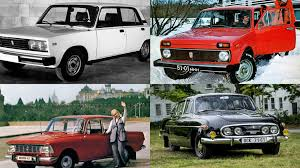

СССР АВТО: Клуб любителей советского автопромаИстория, эстетика и вечная классика советского инжиниринга |
| Главная | Наши автомобили | История заводов | Контакты клуба |
Добро пожаловать в наш клуб!
 Наш клуб объединяет реставраторов, коллекционеров и просто преданных фанатов автомобилей, которые сошли с конвейеров легендарных заводов Советского Союза. Мы сохраняем историю и даем вторую жизнь машинам эпохи. Что вас ждет в нашем клубе:
Популярные марки в нашей коллекции:
|
|
© 2026 Клуб любителей советского автопрома. Все права защищены. Сайт создан студентом 1-го курса Тюгаевым Павлом для дифференцированного зачета. |